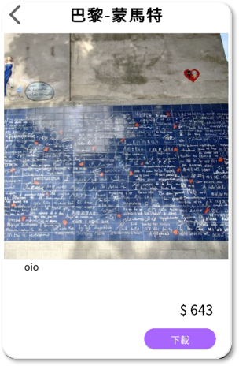
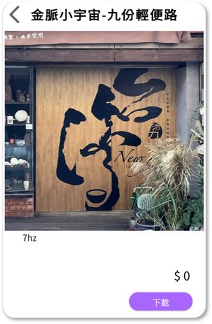
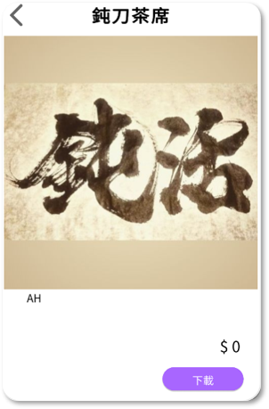
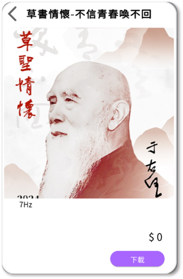
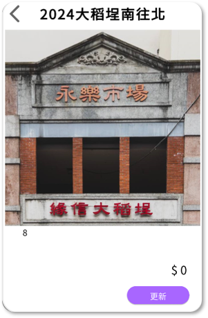
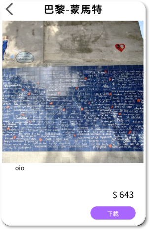
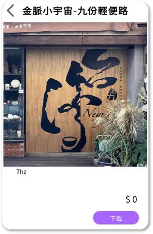
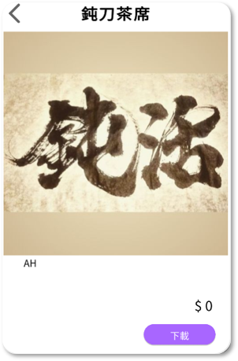
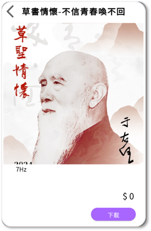
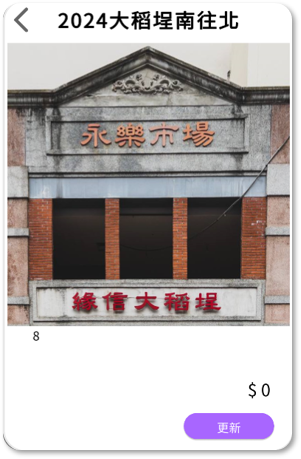

OiO編輯器是一個強大的編輯平台，結合了GPS技術、線上內容、互動機制、物聯網設備、雲端運算、人工智慧和電子商務，實現更智慧和互動的城市設計。
讓OiO當你的專屬導遊，讓你用更有趣的方式認識城市!
OiO 陪你一起旅遊
點開OiO選擇導覽書
跟著AR導覽至景點
點擊景點進行介紹
手機掃描景點跳出內容
靠近店家推播優惠券
返家後仍可打開電子書回味
關於OiO大地編輯器
OiO編輯器是一個超強的城市設計平台，將GPS、互動內容、物聯網、雲端、
AI和電子商務融合在一起，讓城市生活更智慧、更有趣！透過GPS技術，所有
資訊和內容都能精準地帶到你身邊，讓你隨時隨地探索城市新驚喜。
OiO還能讓城市設備智慧協同運作，提高效率，隨時同步和儲存資料，讓你隨
手查看。AI根據你的需求提供個性化內容，並分析數據來優化城市管理。商家
也能輕鬆開設網店，帶動城市經濟發展。

我想了解更多OiO可以做甚麼
OiO包含多方位的功能!

OiO是一個結合GPS、AR、AI等技術的智慧城市平台，提供互動
式導覽和個性化內容，讓使用者透過手機探索城市、享受沉浸式
體驗。
離線GPS地圖
AR實景方位
多語言互動內容
OiO不僅促進了商業行銷和數位教育，也透過互動式導覽和沉浸
式體驗，讓使用者在探索城市的同時，享受無窮的樂趣。從GPS
定位到AR互動，每一次探索充滿了驚喜！
OiO APP操作介紹
點擊景點即可觀看更
深入的景點介紹，豐
富旅遊體驗!!
為遊客提供個人沉浸式
導覽體驗，GPS觸發機制
就像是有專屬導遊提供
在地化、專人化的導覽
啟用AI辨識，AI 場景
建物識別，跳出該景點的
內容，樂趣加倍!
我也想自己做一本電子導覽書，我能夠自己製作嗎？
你當然可以呀!OiO大地編輯器也提供了編輯平台讓你編輯

OiO編輯器自定義
店家不僅可以輕鬆更新電子書中的商品資訊，還能設置優惠券，讓顧客隨時享有超值折扣！更棒的是，他們可以隨時在商品介紹中新增或移除多媒體互動檔案，像是影片、圖片或動畫，讓顧客沉浸在視覺與感官的雙重享受中。這不僅讓商店內容保持新鮮有趣，還能更好地吸引顧客目光，提升購物體驗！
當鄰近的OiO 用戶進行周圍探索的時候被推播吸引，便可促進消費，當遊客返家之後，仍可開啟商家電子書進行線上消費，或是透過更新書籍獲取新的店家優惠資訊。
如果你想嘗試製作電子書請聯絡我們!
關於我們
7Hz載動科技媒體股份有限公司是一間自主開發智慧城市萬業應用工具與系統的軟體暨服務整合公司。
大地編輯器於2023年法國巴黎博覽會上獲得發明獎金牌，並積極與提供觀光、文史、博物館、商圈單位和內容創作者合作，建立虛實整合的服務體驗。
OiO 現有作品推薦
 









你好奇的問題
APP是免費下載的，內含的電子內容有部分需付費體驗。
是的，多數電子內容會使用GPS觸發，讓您有專屬導覽員般的體驗。
為使您的使用體驗盡可能不被網路連線問題所影響，我們的電子內容都需要下載後才能使用。
在開啟電子內容後，只要不關閉APP，仍可進行非連網的應用操作，包含但不限於GPS觸發、辨識觸發之圖像、音檔、AR方位指引等電子內容。
可以移除，並可在已購入電子書清單中重新下載，但內建的觸發紀錄會於移除時一併刪除，GPS觸發將會重置，請務必確認是否刪除。
請先確認手機作業系統是否已升級至 Android13 / iOS 11 以上，若系統已達最低作業環境需求仍未找到OiO App，請來信與我們聯繫，我們會協助您排除問題。